Este curso es el complemento operativo del curso de Exógena. Allí aprendiste qué reportar; aquí aprendes cómo subirlo al portal MUISCA siguiendo el procedimiento oficial de la DIAN para la presentación del año gravable 2025.
En exógena tributaria hay dos años que se mezclan fácilmente:
Año gravable (AG) 2025: el periodo sobre el cual se reportan las operaciones (lo que pasó en su contabilidad de enero a diciembre de 2025).
Año de presentación 2026: el año calendario en el que se ingresa al MUISCA y se sube la información. En este curso, los ejemplos de nombre de archivo XML llevan «2026» porque ese es el año de envío, no el año gravable.
El servicio «Presentación de información por envío de archivos» es el canal oficial DIAN para que los obligados cumplan virtualmente con la presentación de información exógena tributaria. La DIAN destaca cuatro beneficios concretos del servicio:
El proceso oficial DIAN tiene 7 etapas. Cada módulo de este curso cubre una etapa con detalle, basado en la cartilla oficial:
Cada paso del proceso lo hace usted directamente con su cuenta de usuario MUISCA y su firma electrónica. La DIAN no permite intermediarios para este servicio: la firma garantiza que el informante es el que efectivamente presenta.
Para mantener el foco, este curso NO trata estos temas (que están en el curso de Exógena DIAN o en otros recursos):
Las capturas de pantalla utilizadas en este curso provienen de la Cartilla DIAN oficial «Presentación de información por envío de archivos», versión 02 del 2026 (publicación DIAN, dominio público con cita de fuente). El portal MUISCA puede actualizarse: si la captura no coincide exactamente con lo que ve en el portal vigente, guíese por el procedimiento descrito y consulte la versión más reciente de la cartilla en muisca.dian.gov.co.
La DIAN exige siete condiciones previas para que el servicio funcione. Cumplirlas con antelación evita problemas en pleno cierre.
Estos son los siete puntos que la DIAN exige cumplir antes de iniciar la presentación. No es opcional, es la base operativa.
La entidad obligada debe tener vigente en su RUT la responsabilidad «14 – Informante de Exógena». Además debe incluir el correo electrónico y la información de los representantes. Si la responsabilidad no está activa, la DIAN no permitirá presentar.
Los representantes legales o personas autorizadas para presentar a nombre de la entidad deben tener en su RUT la responsabilidad «22 – Obligados a cumplir deberes formales a nombre de terceros» y correo electrónico actualizado. Sin esta marca, la firma electrónica del representante no puede usarse para firmar la presentación.
Tanto la entidad como el representante deben tener cuenta de usuario activa en muisca.dian.gov.co. Si nunca se habilitó, se hace por primera vez con el documento RUT. Si está deshabilitada, hay que recuperarla con «Habilítela aquí».
El IFE es la firma digital DIAN. Se genera desde la cuenta de usuario. Tiene vigencia limitada (la DIAN avisa cuando va a expirar). Sin IFE vigente del firmante autorizado, la solicitud queda en estado «En trámite» (no presentada).
El proceso de firma usa ventanas emergentes. Si su navegador (Chrome, Firefox, Edge) bloquea pop-ups, la firma no se completa. Antes de empezar, autorice ventanas emergentes para muisca.dian.gov.co.
La cartilla DIAN recomienda explícitamente limpiar caché antes de cada sesión crítica. Sesiones anteriores en caché pueden generar errores de autenticación inexplicables.
Los XML deben estar generados desde el prevalidador (Módulo 3) con la nomenclatura correcta: Dmuisca_ccmmmmmvvaaaacccccccc.xml. Si los archivos no cumplen el formato, el sistema los rechaza al cargar.
Llegar a la víspera del plazo sin haber verificado la firma electrónica del representante. Si la firma está vencida, renovarla toma horas o días. En pleno cierre eso se convierte en sanción por extemporaneidad evitable.
Antes de cada temporada de exógena, prepare un checklist por cliente con las 7 condiciones marcadas con fecha de verificación. Es lo más simple del proceso y lo que más sufre la gente que no lo planea.
El Prevalidador es una herramienta Excel oficial DIAN que valida y genera los archivos XML que después se suben al portal. Sin XML válido no hay presentación posible. Este módulo cubre las tres fases: descargar, instalar y operar el prevalidador para producir el XML.
La DIAN ofrece dos puntos de descarga del prevalidador. Cualquiera funciona; suele ser más fácil la primera (portal transaccional). Para esta guía usamos esa ruta.
Vaya a www.dian.gov.co. En la columna lateral, haga clic en la opción «Sitio web institucional». Esto lo lleva a la zona pública del portal (distinta del Portal Transaccional, que es donde más tarde hará la presentación).
Una vez dentro del Sitio web institucional, busque en el menú superior la siguiente ruta:
Transaccional → Otros Servicios → Prevalidadores
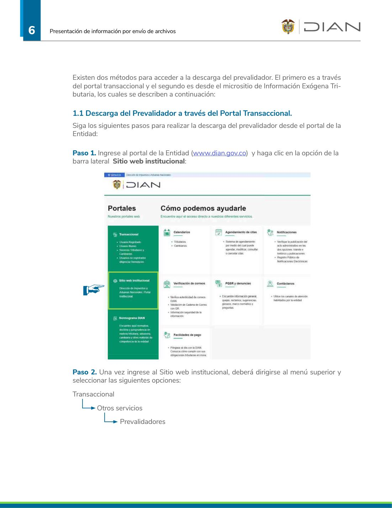
Al hacer clic en «Prevalidadores», veá el listado completo de prevalidadores DIAN para los distintos procesos. Filtre o navegue hasta la sección Impuestos. Ahí aparecen los prevalidadores tributarios.
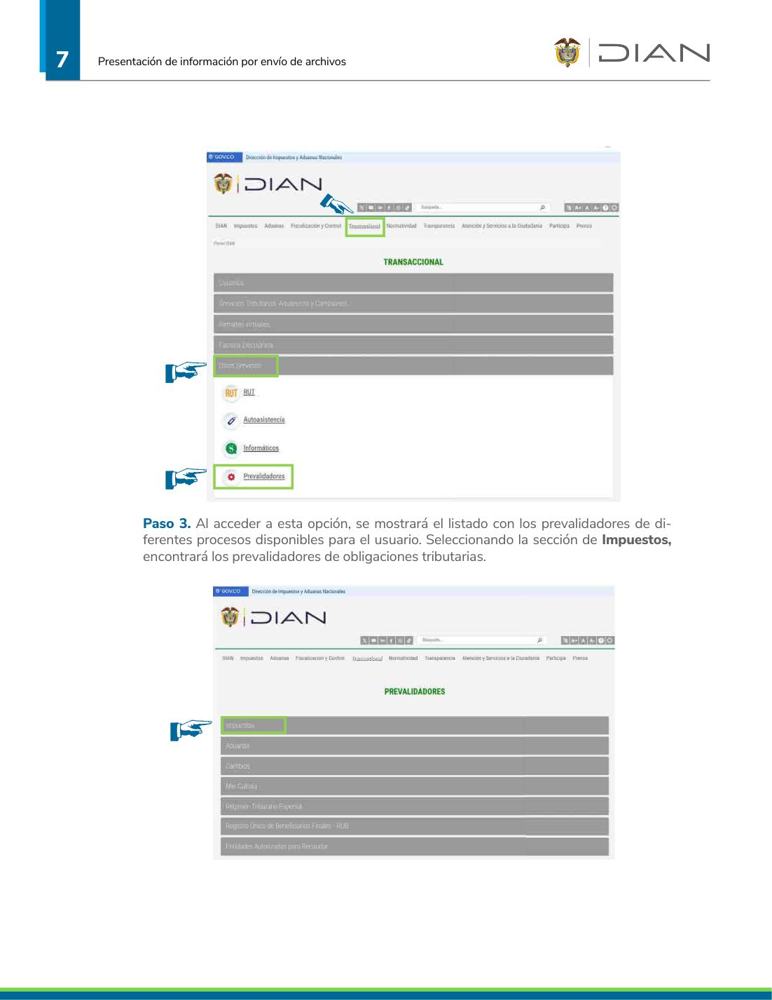
Los prevalidadores de Información Exógena Tributaria aparecen con el nombre «Información Tributaria» seguido del año de vigencia. El prevalidador que descargue DEBE corresponder al año gravable que va a reportar. Para la temporada actual (AG 2025 presentada en 2026), descargue el prevalidador «Información Tributaria 2025». Es un error común descargar el del año anterior por inercia, lo que genera versión de formato incorrecta al cargar.
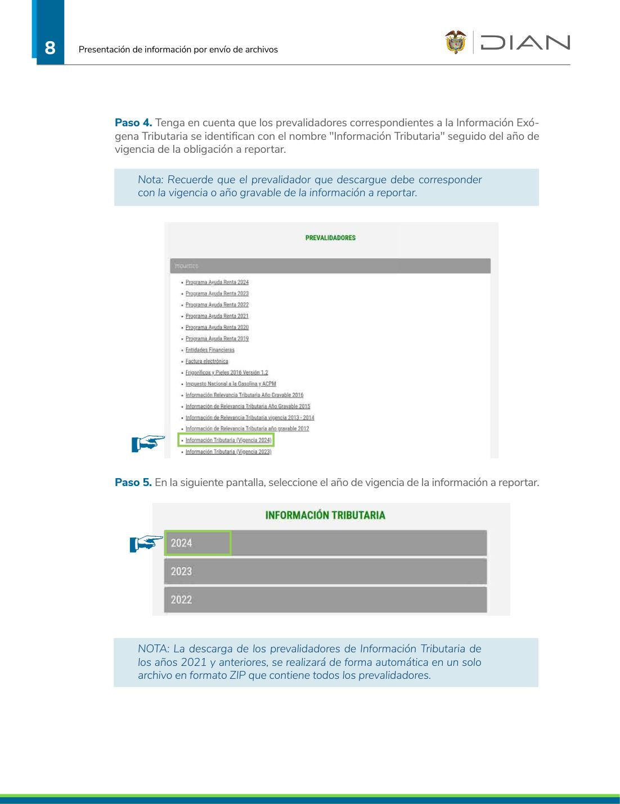
Al hacer clic en el prevalidador del año, se descarga un archivo ZIP. Descómprímalo en una carpeta específica de su computador (no en archivos del sistema). Al ejecutar el archivo, inicia el proceso de instalación.
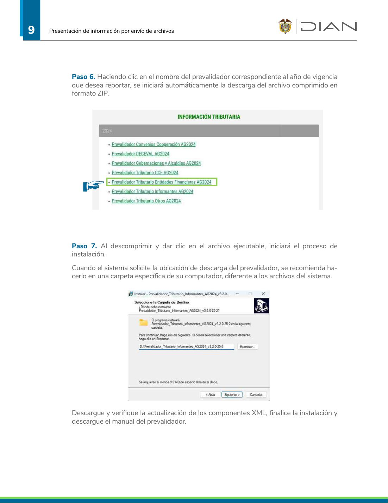
Una vez instalado, la cartilla DIAN advierte expresamente: no mover ni eliminar ninguno de los archivos o carpetas del prevalidador. Eso lo rompe. Si necesita moverlo, mejor reinstalar en la nueva ubicación.
Si la ruta del portal transaccional falla o cambia, hay una ruta alterna por el Micrositio de Información Exógena Tributaria:
Impuestos → Sociedades → Información Exógena Tributaria → Prevalidadores
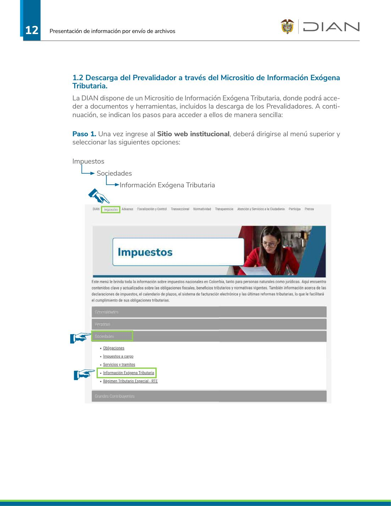
Antes de pasar al módulo siguiente, fije esto en su cabeza: el archivo XML que genera el prevalidador tiene un nombre de 33 caracteres con significado:
Dmuisca_ccmmmmmvvaaaacccccccc.xml
Ejemplo (presentación del AG 2025): Dmuisca_010100110 2026 00000001.xml → Inserción inicial, formato F1001 versión 10, año de envío 2026 (presentando información del AG 2025), consecutivo 1.
Cada XML acepta máximo 5.000 registros y el prevalidador particiona automáticamente cuando el formato excede esa cifra. Por envío (solicitud) el máximo es 50.000 registros o 10 archivos. Si su informante supera esto, divida en varias solicitudes.
Ya tiene el prevalidador descargado e instalado. Esta sección cubre la operación: abrir el Excel, cargar los datos, validar, leer el reporte de errores y obtener el XML final. Es el paso donde la mayoría de contadores se atasca la primera vez que presentan exógena.
La cartilla DIAN (vr.02 2026, pág. 14) describe cuatro funcionalidades del prevalidador:
El prevalidador es un archivo Excel (.xlsm o .xlam) con macros firmadas por DIAN. Al abrirlo por primera vez, Excel muestra una barra amarilla en la parte superior:
Sin macros habilitadas, los botones «Validar» y «Generar XML» no responden y el alumno suele pensar que el prevalidador está roto.
La cartilla DIAN (pág. 11) advierte expresamente: «Para el correcto funcionamiento se recomienda no abrir más de un prevalidador simultáneamente.» Las macros comparten globales en memoria y se pisan entre sí, generando XMLs corruptos o cuelgues. Cierre uno completamente antes de abrir otro.
La cartilla DIAN (pág. 11, Paso 8) indica que en la carpeta del prevalidador encontrará:
Recordatorio del bloque de instalación: no mueva, renombre ni borre ninguno de esos archivos. Si necesita el prevalidador en otra ubicación, desinstale y vuelva a instalar allá.
Dentro del Excel del prevalidador hay un menú (normalmente arriba a la izquierda o en una hoja «Inicio») para elegir el formato que va a generar: F1001 Pagos y abonos, F1003 Retenciones que le practicaron, F1005 IVA descontable, F1006 IVA generado, F1007 Ingresos recibidos, F1008/1009/1010/1012 Saldos a cierre, F2276 Certificados de ingresos y retenciones, etc. Cada formato abre una hoja con sus columnas específicas.
Tiene dos formas de cargar los datos:
Use exogenadian.com/exogena.html para procesar su balance de prueba por terceros y generar el Excel con los 10 formatos ya armados, con columnas en el orden EXACTO que pide cada formato DIAN. Después sólo copia y pega cada hoja al prevalidador. Ahorra entre el 70% y el 90% del tiempo vs diligenciar a mano, y reduce errores de mapeo.
Con los datos cargados, presione el botón «Generar archivo XML» (en algunas versiones aparece como «Validar y Generar» o «Conformar», según vigencia). El prevalidador hace tres cosas en una pasada:
El particionado es automático: si el formato lleva más de 5.000 registros, el prevalidador genera varios XML con consecutivo correlativo (...00000001.xml, ...00000002.xml, …).
La hoja de errores muestra una tabla con tres o cuatro columnas: fila/registro, columna, descripción del error y a veces el valor encontrado. Estos son los errores que aparecen el 80% de las veces:
Después de corregir, vuelva a presionar «Generar archivo XML». El prevalidador re-valida desde cero (no incrementalmente).
Antes de meter su Excel al prevalidador DIAN, páselo por exogenadian.com/prevalidador.html — es nuestra validación gratis, en el navegador, que catchea NIT con DV mal, terceros sin dirección, conceptos inválidos, códigos de municipio inexistentes y cuantías por debajo del tope. Le evita el ciclo de «abrir Excel del prevalidador → pegar → generar → error → cerrar → corregir → pegar de nuevo». Cuando llega al prevalidador V9, llega con XML limpio al primer intento.
Cuando el prevalidador termina sin errores, el XML aparece en la carpeta <ruta-del-prevalidador>/salida/. El nombre sigue la estructura de 33 caracteres que vimos arriba:
Dmuisca_010100110 2026 00000001.xml
Confirme cinco cosas antes de cerrar el prevalidador:
Por inercia, mucho contador descarga el prevalidador del año anterior y genera XML con versión de formato incorrecta. La DIAN lo rechaza al cargarlo en MUISCA con un mensaje genérico de «versión no válida». Verifique que el año del prevalidador descargado en el Módulo 3 corresponde al año gravable que está reportando, no al actual.
Si editó el XML a mano (no recomendado) o le entregaron un XML hecho por un tercero y quiere comprobar su estructura, el prevalidador permite cargarlo desde entrada/ y correr una validación contra el esquema XSD oficial. Esta ruta detecta errores de estructura (etiquetas mal cerradas, tipos de dato incorrectos) pero no revalida el contenido (no recalcula DV, no verifica que el municipio exista). Para revalidar contenido, vuelva a pasarlo por la generación normal (Paso 4).
Junte el Módulo 3 completo en una sola tira mental:
Si el prevalidador rechaza el XML por motivos más específicos (terceros con NIT propio de la empresa, ingresos de exterior sin código de país, IVA mayor valor, etc.), consulte la sección de troubleshooting en el tutorial de exógena. Cubre los 20+ errores menos comunes que aparecen sobre todo en informantes grandes.
Aquí entra propiamente al portal MUISCA. Es el primer momento donde se autentica con su firma electrónica.
En www.dian.gov.co, ubique la sección del Portal Transaccional y haga clic en «Usuario Registrado». Esta es la opción para usuarios con cuenta MUISCA habilitada (lo cual ya verificó en el Módulo 2).
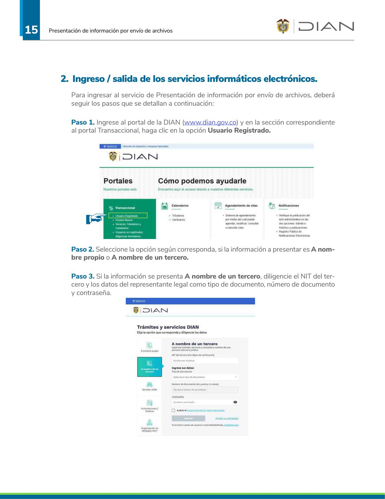
Si usted es contador o asesor y va a presentar a nombre de una sociedad o de otro contribuyente, debe seleccionar «A nombre de un tercero». Si presenta su propia obligación (persona natural), seleccione «A nombre propio».
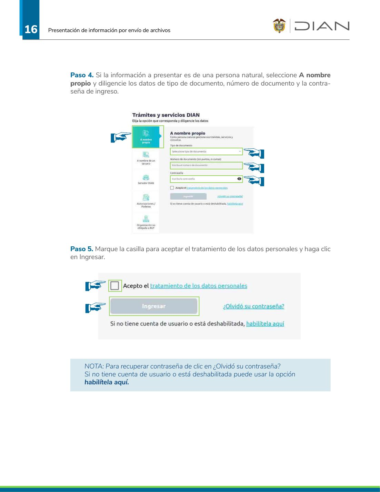
Si entra a nombre de un tercero, diligencie:
Es la combinación NIT-tercero + identificación del representante lo que la DIAN usa para autenticar.
Marque la casilla de aceptación de tratamiento de datos personales (Ley 1581/2012). Sin esto la sesión no inicia.
Use «¿Olvidó su contraseña?». El correo de recuperación llega al e-mail registrado en RUT. Por eso es crítico tener el correo actualizado.
Cuando ingresa, en la parte superior debe aparecer:
Verifique que aparece la entidad correcta antes de proseguir. Es fácil entrar «a nombre propio» cuando tenía que ser de un tercero y luego presentar mal.
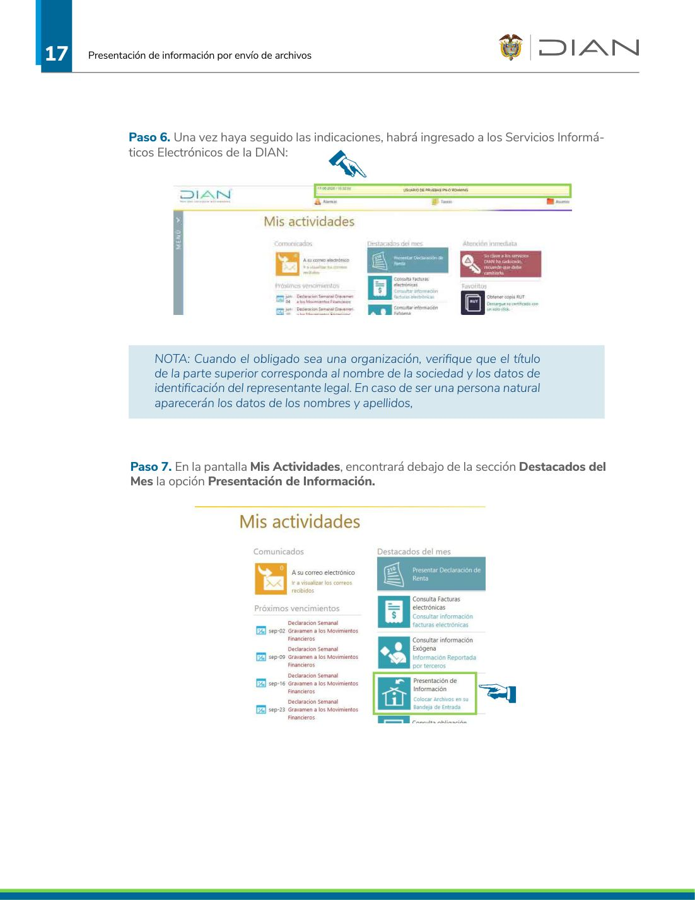
En la pantalla «Mis Actividades», en la sección «Destacados del Mes», encontrará la opción «Presentación de Información». También puede acceder por el menú lateral izquierdo → «Presentación de Información por Envío de Archivos».
Cuando termine, haga clic en el ícono «Cerrar» de la parte superior. Cerrar el navegador sin hacer esto deja la sesión abierta y puede causar conflictos en próximos ingresos.
Entrar «a nombre propio» siendo contador y presentar la exógena de un cliente sin darse cuenta. La presentación queda registrada con el NIT del contador, no del cliente. En la cartilla (pág. 32) la DIAN aclara que en ese caso hay que cancelar la solicitud y volverla a presentar correctamente.
La bandeja de entrada es donde el MUISCA recibe sus archivos XML antes de procesarlos. Esta etapa es independiente de la presentación formal — aquí solo «deja» los archivos.
Desde «Mis Actividades», haga clic en «Presentación de Información por Envío de Archivos». Aparece el menú del servicio con varias opciones: Colocar archivos, Diligenciar solicitud, Consultar envíos, Reemplazar, Cancelar, etc.
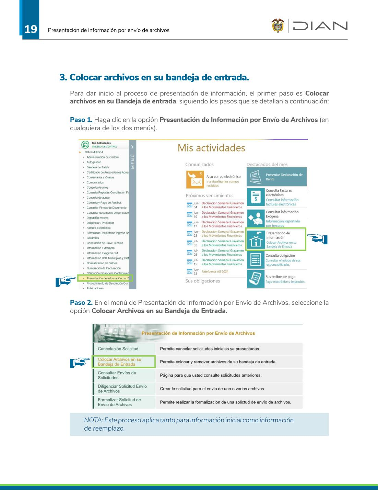
Es la primera opción del flujo. Aplica tanto para información inicial como para reemplazos.
Ingrese el código o nombre del formato que va a cargar (ejemplo: 1001 para F1001 Pagos y Abonos en Cuenta). Haga clic en «Buscar».
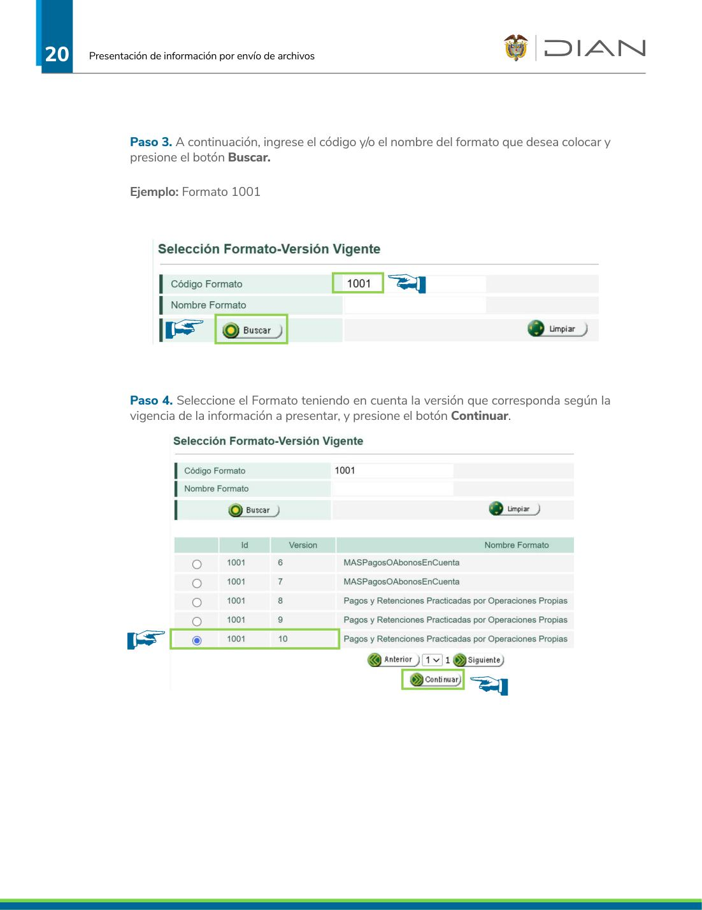
El sistema lista todas las versiones del formato (las hay del año vigente y de años anteriores). Seleccione la versión que corresponde al año gravable que va a reportar y haga clic en «Continuar». Versiones incorrectas son una causa frecuente de rechazo posterior.
La pantalla muestra los datos de identificación cargados automáticamente desde el RUT. Verifique que están bien (razón social, NIT). Haga clic en «Elegir archivos» y navegue hasta la carpeta donde el prevalidador guardó los XML (usualmente la carpeta salida).
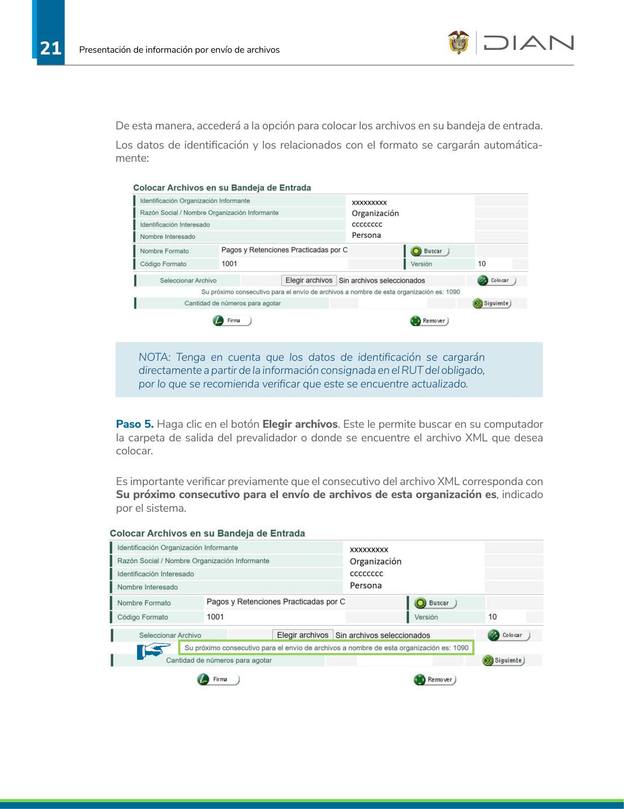
El sistema muestra: «Su próximo consecutivo para el envío de archivos de esta organización es» seguido de un número. El XML que va a cargar debe iniciar con ese consecutivo. Si no coincide, la solicitud será rechazada más adelante.
Haga clic en «Colocar». Si todo va bien, el archivo aparece listado en la parte inferior de la pantalla.
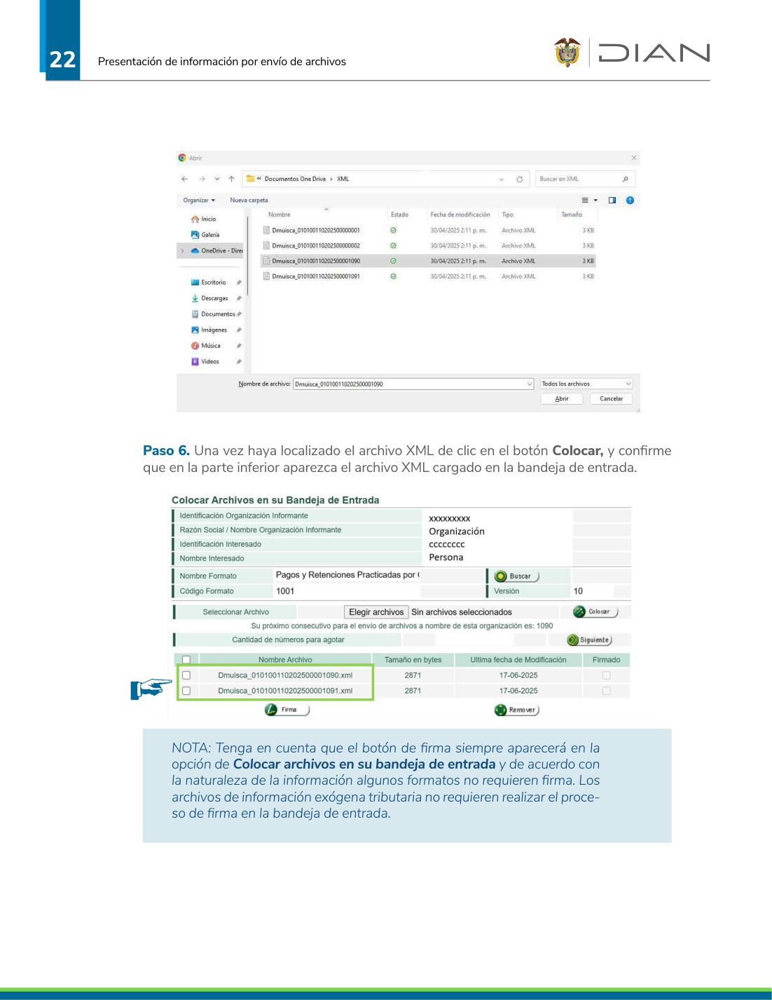
De los archivos cargados, seleccione el de número consecutivo más bajo (primer archivo). Haga clic derecho sobre el nombre y copíelo. Lo va a necesitar en el módulo siguiente para diligenciar la solicitud.
Si necesita remover un archivo cargado por error, márquelo con la casilla a la izquierda y use el botón «Remover».
El consecutivo de envío es único por organización y por año, no se reinicia por formato. La cartilla DIAN da este ejemplo (pág. 24-25):
Si presenta 3 archivos del F1001:
Dmuisca_010100110202600000001.xml (consecutivo 1)
Dmuisca_010100110202600000002.xml (consecutivo 2)
Dmuisca_010100110202600000003.xml (consecutivo 3)
Y luego presenta 2 archivos del F1007:
Dmuisca_010100710202600000004.xml (consecutivo 4)
Dmuisca_010100710202600000005.xml (consecutivo 5)
Cada cliente tiene su propio contador. El sistema le indica el consecutivo siguiente cada vez que carga.
Si su informante tiene 68.500 registros del F1001, debe hacer dos solicitudes: una de 50.000 y otra de 18.500.
Mezclar archivos de un formato con archivos de otro en la misma bandeja antes de diligenciar la solicitud. La solicitud se hace por formato. Si carga XMLs de dos formatos al tiempo, el segundo va a generar conflicto de consecutivo.
Este es el módulo más crítico. Aquí firma electrónicamente y genera el acuse de recibo. Si esta etapa no se completa bien, la información NO queda presentada.
Después de colocar los archivos en bandeja (Módulo 5), regrese al menú principal del servicio y haga clic en «Diligenciar Solicitud de Envío de Archivos».
La pantalla pre-carga los datos de la organización y del interesado según el inicio de sesión. Verifique:
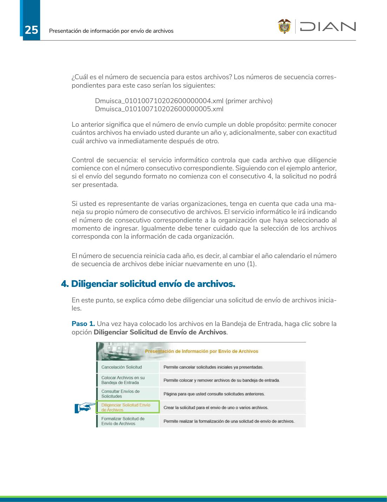
Seleccione el Periodo Informado. Depende de la periodicidad de cada formato (anual típicamente para exógena de información tributaria).
El campo Concepto aparece autocompletado como «Inserción / Nuevo» — eso indica que es una presentación inicial. Para reemplazos el concepto sería «Reemplazo» (Módulo 8).
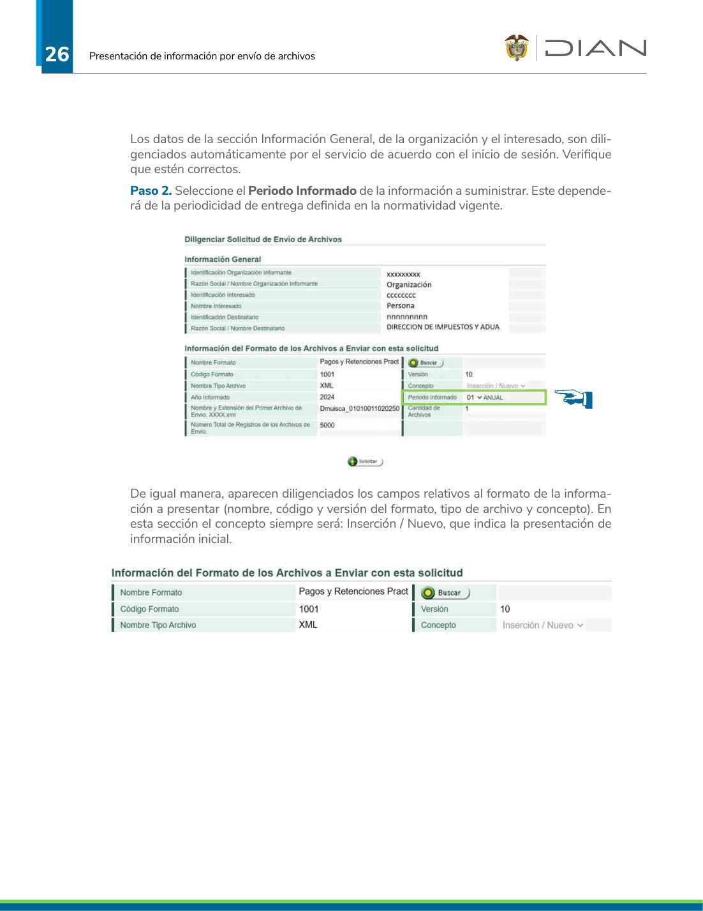
Si declara «15.000 registros» pero los archivos suman 14.999 o 15.001, el sistema rechaza la solicitud con error: «Cantidad de registros en el(los) archivo(s) no coincide con la digitada en la solicitud de envío». Verifique los totales antes de hacer clic en Solicitar.
Al hacer clic en Solicitar, el sistema despliega un cuadro de diálogo de confirmación. Diga «Sí» para continuar.
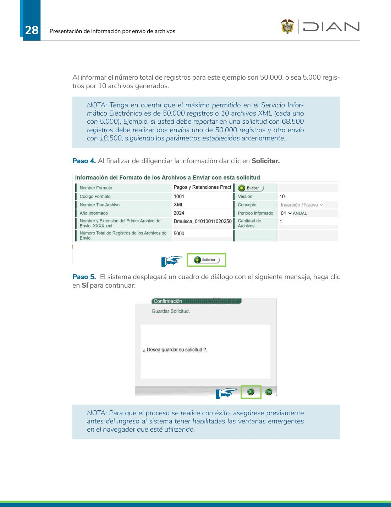
Aparece una ventana emergente con el proceso de firma. Aquí necesita:
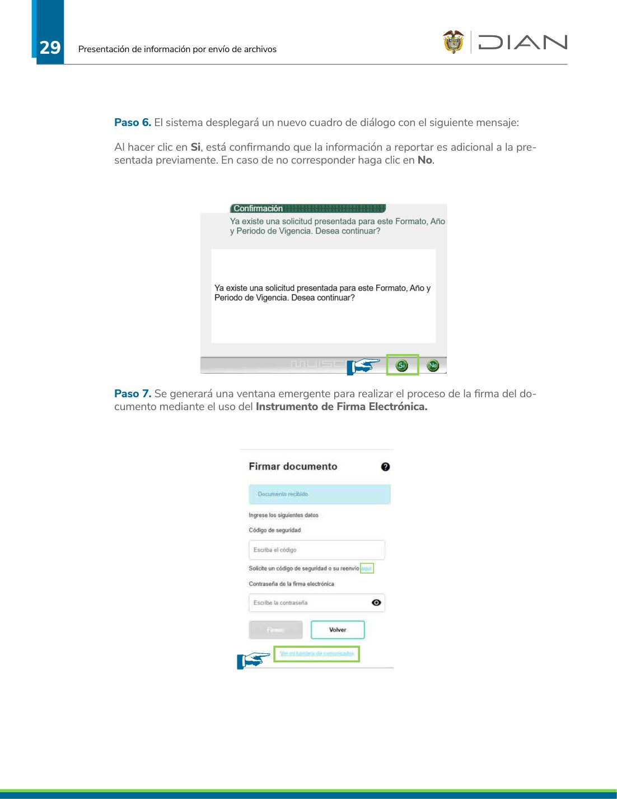
Haga clic en «Ver mi bandeja de comunicados» para obtener la clave dinámica. La clave llega al buzón DIAN del usuario (NO al correo electrónico externo). Tenga en cuenta:
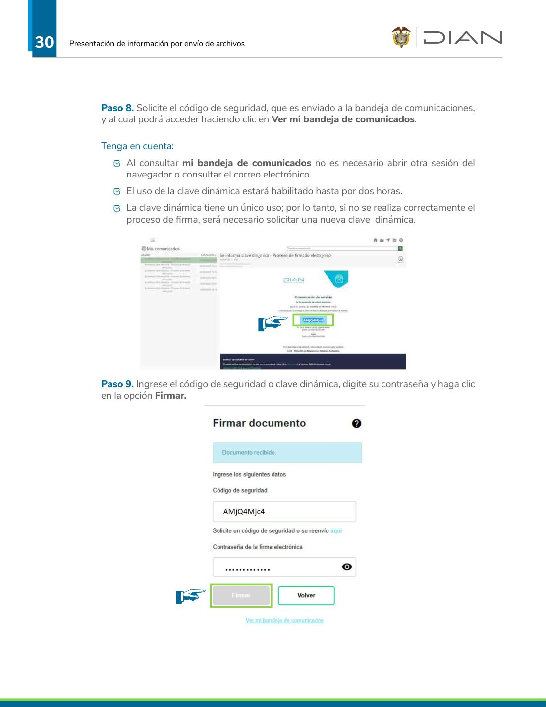
Vuelva a la pantalla de firma. Ingrese la clave dinámica, digite su contraseña personal y haga clic en «Firmar».
Si la firma fue exitosa, aparece la ventana de Acuse de Recibo. Descargue y guarde el acuse. Este es su constancia legal de presentación.
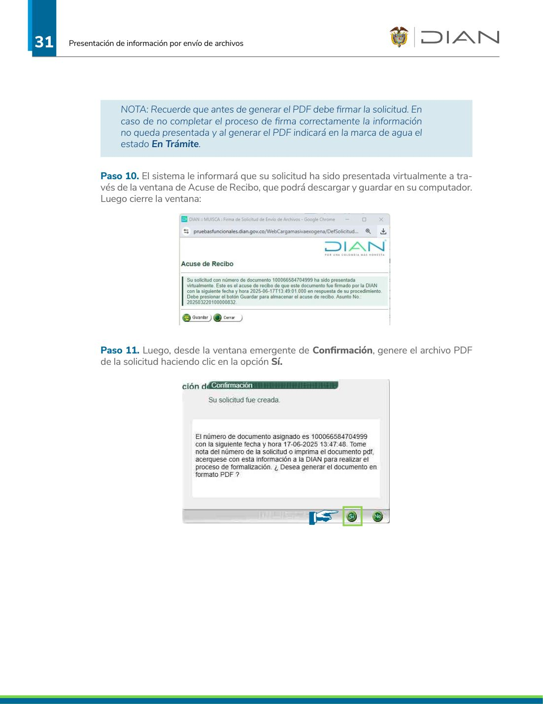
En la siguiente ventana, confirme la generación del PDF. Es importante: antes de generar el PDF debe haber firmado correctamente. Si la firma fue incompleta, el PDF aparecerá con marca de agua «En Trámite» — eso significa que la información NO está presentada.
Abra el PDF y verifique la marca de agua:
El contador cierra el navegador después del Paso 5 pensando que ya presentó. La realidad: solo se «cargaron» los archivos y se inició la solicitud. Sin completar la firma (Pasos 6-9), la información NO está presentada. Cuando vence el plazo, aparece la sanción Art. 651 ET y el contador descubre el error tarde.
Después de presentar, vuelva al MUISCA al día siguiente y use «Consultar Envíos de Solicitudes» (Módulo 7) para confirmar que la solicitud aparece como «Recibida». Es 30 segundos de trabajo que confirman el cierre.
Después de presentar, el flujo es seguir el estado. Esta es la pantalla que la DIAN usa para auditar y la que usted debe usar para verificar.
Desde el menú del servicio, haga clic en «Consultar Envíos de Solicitudes». Aparecen solo las solicitudes que terminaron correctamente el proceso de presentación (las que tienen acuse).
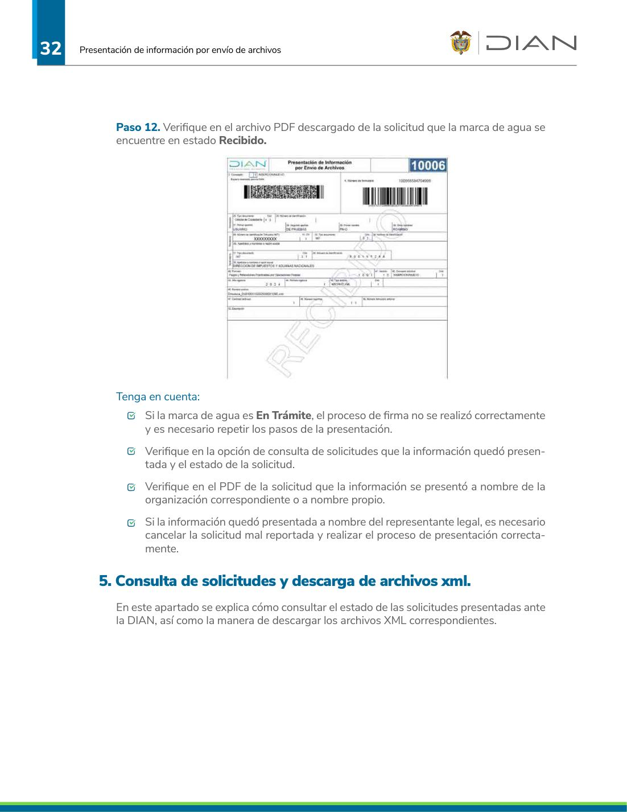
Diligencie el código del formato (1001, 1003, 1005, etc.) y haga clic en Buscar. El sistema lista todas las versiones del formato. Seleccione la que corresponda y continue.
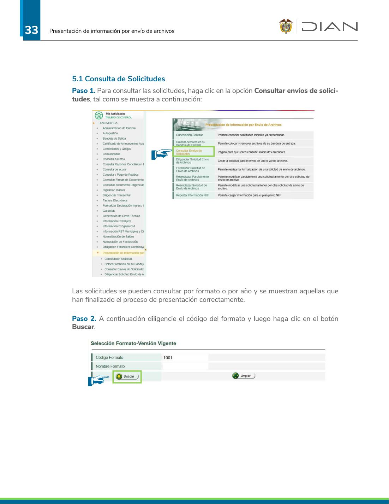
Alternativamente, puede consultar por año gravable. Haga clic en «Limpiar», diligencie el año, y «Buscar». Aparecen todas las solicitudes presentadas en ese año, sin importar el formato.
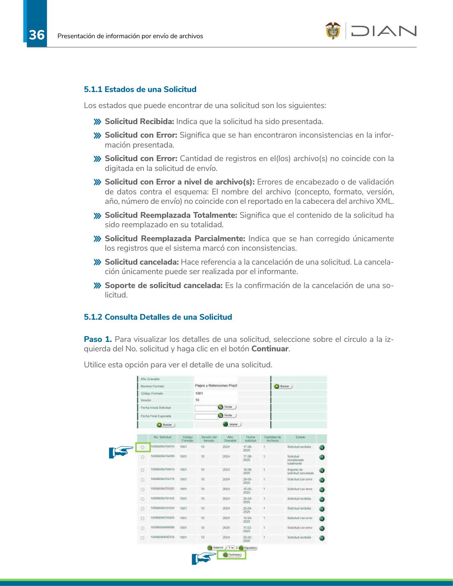
Seleccione el círculo a la izquierda del número de solicitud y haga clic en Continuar. Veá los detalles: archivos que la componen, conteo de registros, estado, archivos descargables.
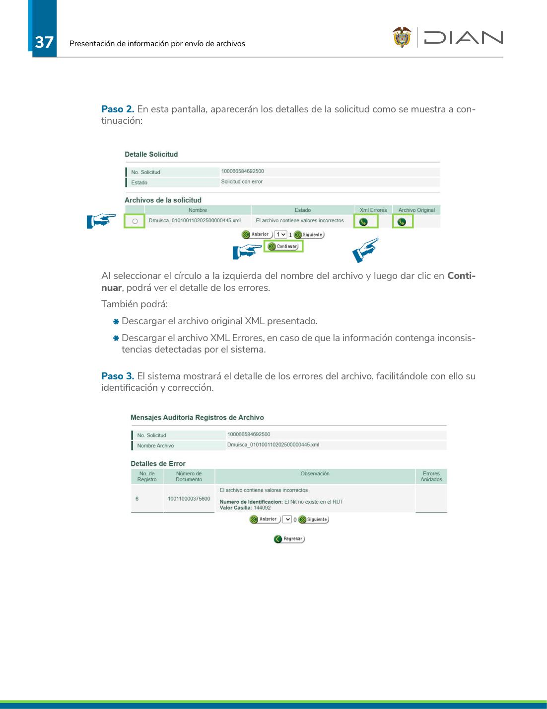
Desde los detalles puede descargar:
El XML de errores se puede cargar al prevalidador. Use la función «Ver archivo de error»: el prevalidador ubica automáticamente los registros erróneos en el XML original para que los corrija sin tener que re-encontrarlos manualmente.
Cuando la solicitud quedó con error o usted detectó un error después de presentar, debe presentar una solicitud de reemplazo. Hay dos tipos: parcial y total.
Esta es la distinción más importante de este módulo. La cartilla DIAN (pág. 39) las define explícitamente:
Se usa solo cuando el sistema marcó ciertos registros con error y solo va a corregir esos registros. Genere un XML que incluya únicamente los registros erróneos. Es un reemplazo «quirúrgico».
Limitación crítica: si un reemplazo parcial sale con error, ya solo puede corregirse con un reemplazo total (que incluye todos los registros, no solo los corregidos).
Genere un XML con toda la información completa (los registros iniciales más las correcciones). Se usa para:
Si un reemplazo total sale con error, solo puede reemplazarse con otro reemplazo total.
Vuelva al prevalidador. Corrija los registros y genere un nuevo XML. El nombre del archivo debe iniciar con concepto 02 (Reemplazo):
Dmuisca_020100110202600001092.xml
El prevalidador permite cambiar el concepto al generar el archivo nuevo. La cabecera dentro del XML también debe llevar concepto 02.
Mismo procedimiento del Módulo 5: colocar archivos en bandeja de entrada. Aplica tanto para inicial como para reemplazo.
En el menú del servicio, después de colocar, el sistema le ofrece dos opciones de reemplazo (parcial o total). Seleccione la que corresponda.
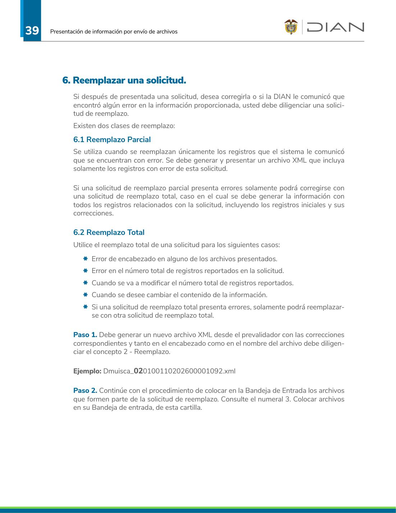
En la pantalla siguiente, el campo Concepto debe decir Reemplazo. Si dice «Inserción», está en la opción equivocada y debe regresar.
Diligencie los datos de la solicitud de reemplazo. En el campo Número de la Solicitud Anterior, haga clic en «Buscar» y seleccione la solicitud que va a reemplazar. Verifique que corresponde al año de vigencia correcto.
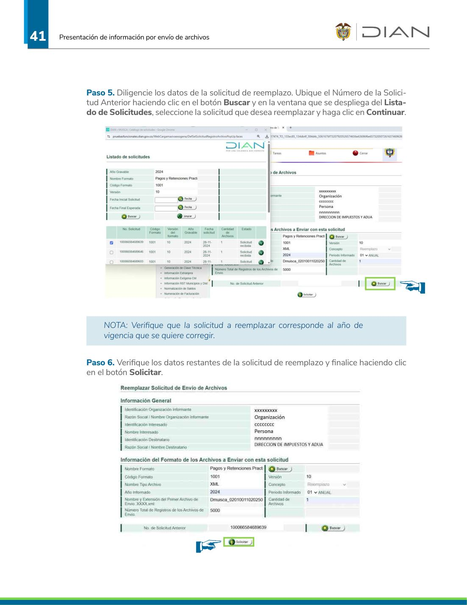
Verifique los datos restantes y haga clic en Solicitar. El flujo de firma y PDF es idéntico al del Módulo 6 (pasos 5-12).
En «Consultar Envíos de Solicitudes», la solicitud anterior queda marcada como «Reemplazada Total» o «Reemplazada Parcial» y la nueva queda como «Recibida».
Si la solicitud original se presentó fuera del plazo de la Resolución 000227/2024, hacer un reemplazo más tarde no elimina la sanción del Art. 651 ET. El reemplazo solo corrige el contenido, no el momento de presentación original.
Cuando presentó información duplicada, con datos del interesado equivocados o con error en el nombre del archivo, debe cancelar la solicitud por completo. Es distinto al reemplazo.
La cancelación se usa cuando el problema es estructural y no se puede arreglar con un reemplazo. La cartilla DIAN lista tres motivos válidos (pág. 44):
Solo el informante puede cancelar. La DIAN no cancela por iniciativa propia: es un acto de autogestión.
En el menú del servicio, seleccione «Cancelación Solicitud».
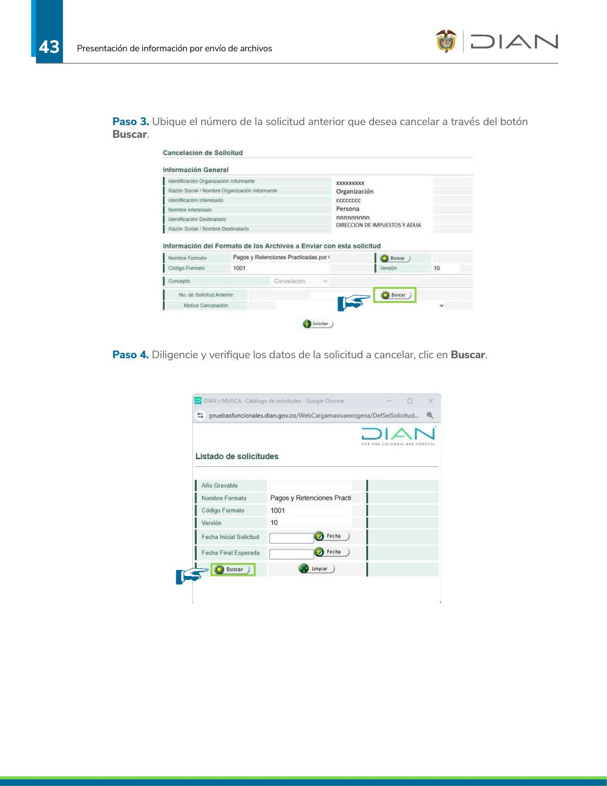
Verifique la información del formato a cancelar. Si necesita seleccionar otro, use «Buscar».
Localice el número de la solicitud a cancelar usando el botón Buscar. Verifique año, formato y fecha.
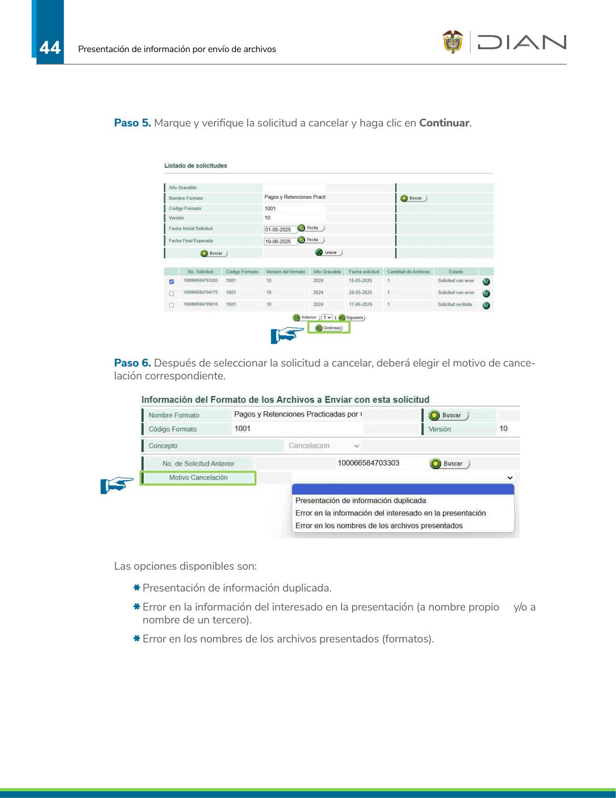
Marque la solicitud, haga clic en «Continuar» y seleccione el motivo de cancelación del listado fijo:
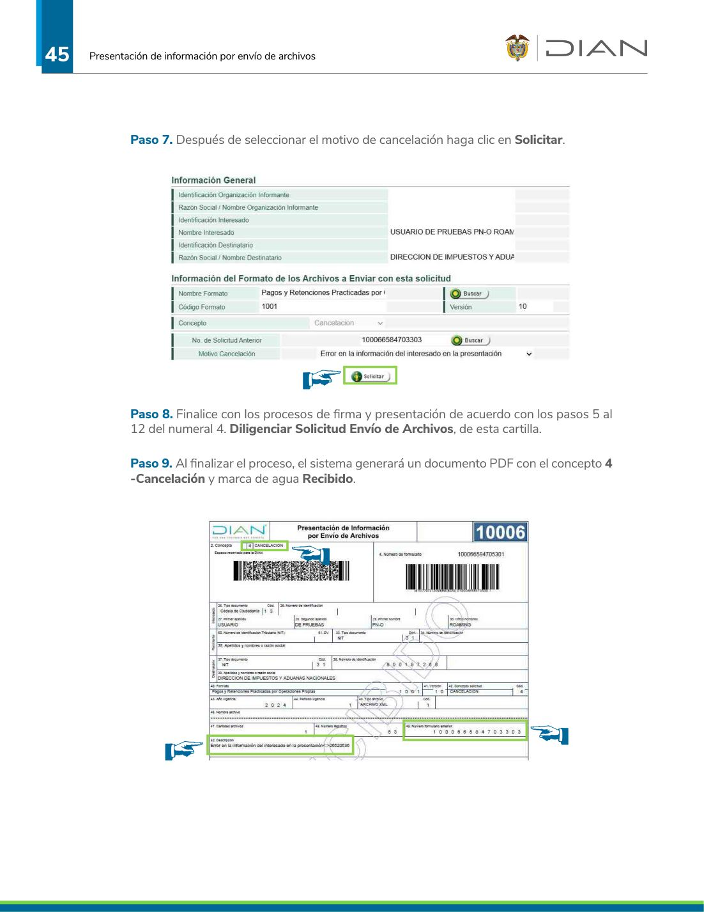
Haga clic en Solicitar. El flujo de firma electrónica es idéntico al del Módulo 6 (pasos 5-12). El sistema genera un PDF con concepto «4 - Cancelación» y marca de agua «Recibido».
En «Consultar Envíos de Solicitudes», la solicitud original aparece con estado «Cancelada» y al lado un «Soporte de Solicitud Cancelada» descargable en PDF.
Cancelar deja la información como NO presentada. Si todavía tiene obligación de reportar (porque canceló por error de identificación, p. ej.), debe iniciar el proceso completo de nuevo: bandeja, solicitud, firma. No olvide hacerlo dentro del plazo.
Cerrar bien la temporada implica conocer los plazos vigentes, las sanciones por incumplimiento y dejar un archivo profesional ordenado del cliente.
La Resolución DIAN 000227 de 2024 (modificada por 000233 y 000237 de 2025) fija las fechas de vencimiento por dígito del NIT del informante para la presentación del año gravable 2025 durante el 2026. Personas jurídicas tienen un calendario; personas naturales otro. Cada año se publica el calendario actualizado en muisca.dian.gov.co y en el Micrositio de Información Exógena Tributaria.
Defina en su firma un calendario interno con al menos 2 semanas de margen sobre el plazo legal de cada NIT. Eso le da tiempo para errores de validación, problemas de firma electrónica e incidentes del portal MUISCA.
No enviar información: sanción hasta el 4% del valor de las operaciones no informadas.
Enviar información errónea: sanción hasta el 5% del valor de la información errónea.
Enviar información extemporánea: sanción hasta el 3% del valor de la información.
Tope global de la sanción: 15.000 UVT. Reducible por gradualidad del Art. 640 ET cuando se corrige voluntariamente.
Al finalizar el proceso por cada cliente, mantenga en la carpeta del cliente:
Al día siguiente de presentar, vuelva al MUISCA y en «Consultar Envíos de Solicitudes»:
Si llegó hasta aquí con su cliente real, sabe:
Ese es el ciclo completo. Combinado con el curso de Exógena DIAN (que cubre la clasificación y el armado de los formatos), tiene el flujo entero de la temporada.
Capturas y procedimiento basados en: Cartilla DIAN — Presentación de información por envío de archivos (versión 02, 2026). Documento público DIAN.